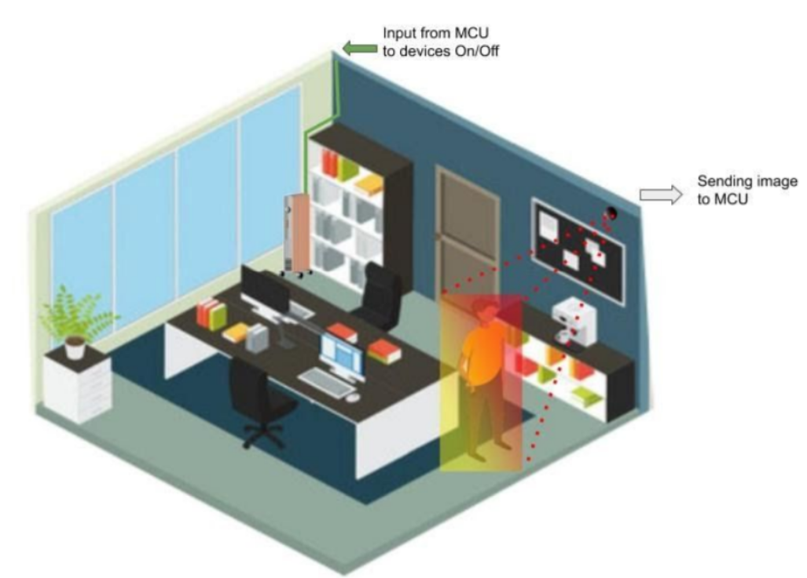

Patent Works

Using computer vision in this project, we made room device operate suitable to human present in the room. In the process we are also able to save electricity. How cameras are used, how processing is done, and how we made it economical is described.

We love our tea hot, and our beverages cold. But oposite to their nature they get cold and hot respectively and lose taste. We designed such cup that keep your drink on temperatures you want.